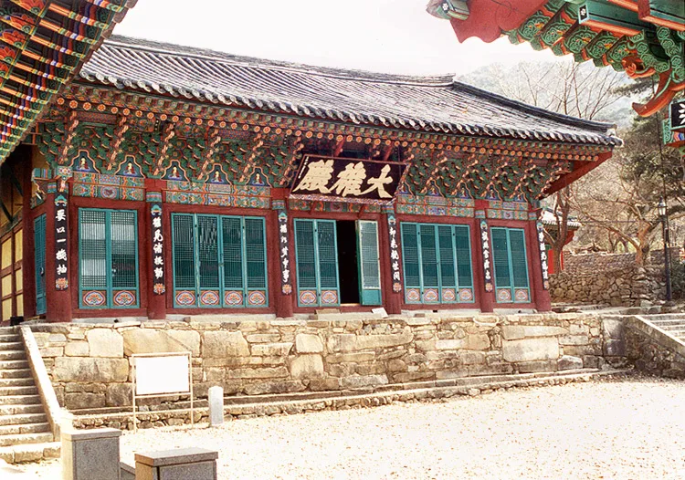
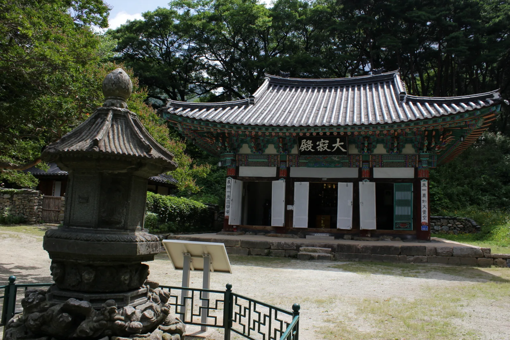
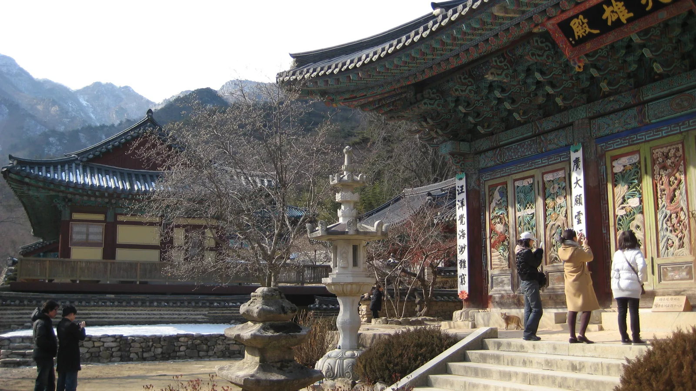
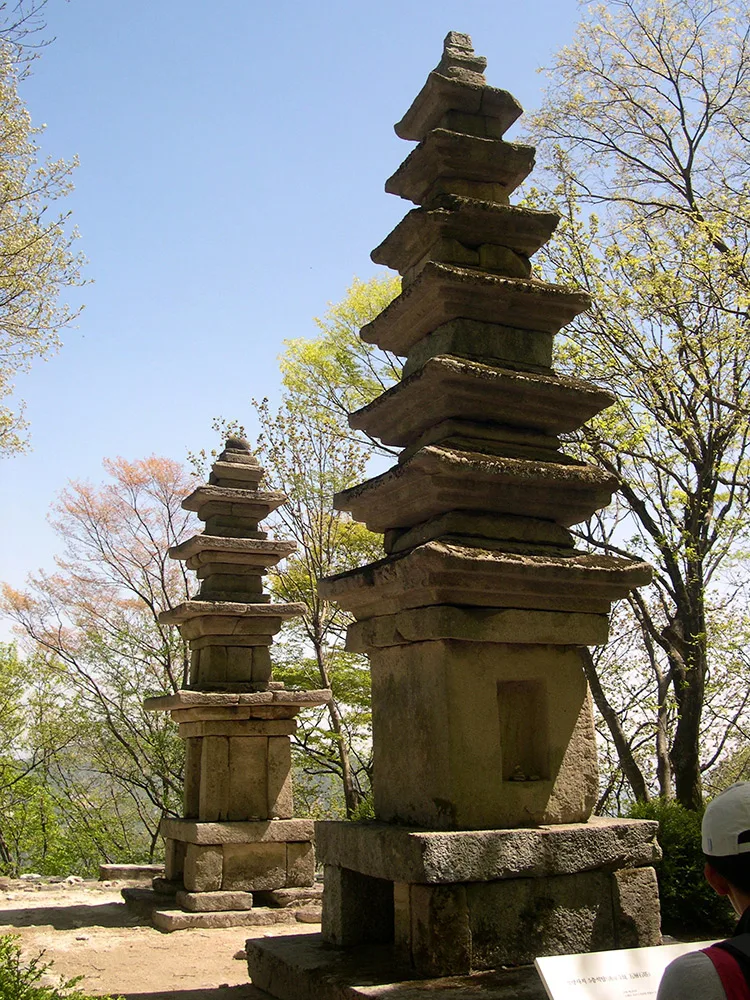
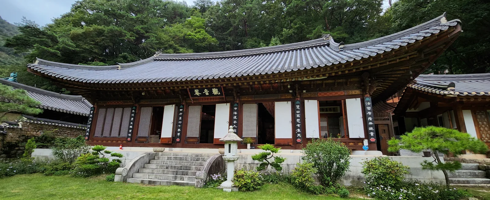
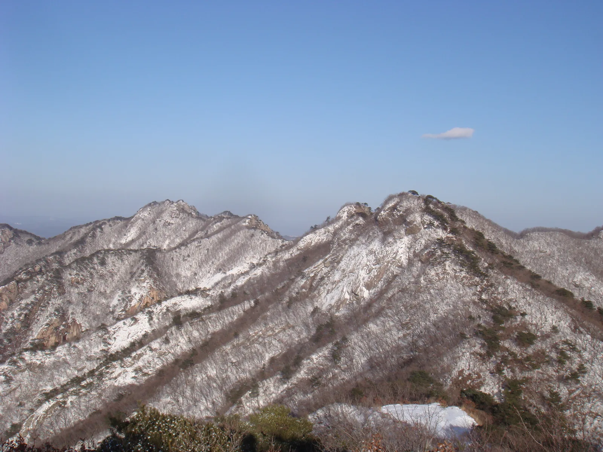

▲ 단풍철 동학사 일주문. 계룡산국립공원 동쪽 자락, 비구니 강원으로 이름난 사찰이다
'춘마곡추갑사(春麻谷秋甲寺)'라는 옛말이 있다. 봄에는 공주 마곡사가, 가을에는 계룡산 갑사가 제 맛이라는 뜻이다. 실제로 계룡산국립공원 서쪽 자락의 갑사는 화려한 가을 단풍으로 예로부터 이름났고, 동쪽 자락의 동학사는 국내를 대표하는 비구니 강원이자 신라·고려·조선의 충신을 함께 기리는 숙모전이 있는 사찰이다. 두 절은 계룡산 능선을 사이에 두고 마주 보고 있어, 능선을 넘는 종주 코스로 하루에 함께 둘러보는 등산객도 많다. 이 기사는 갑사와 동학사 각각의 볼거리부터 등산코스, 단풍 시기, 탐방로예약제 대상 구간까지 정리했다.
미리 보기
- 갑사는 420년(백제 구이신왕 원년) 창건 전언, '춘마곡추갑사'로 불리는 가을 단풍 명소
- 동학사는 통일신라 상원사에서 비롯, 국내 대표 비구니 강원이자 숙모전 소재
- 갑사~동학사 종주는 연천봉·관음봉·삼불봉·남매탑을 지나는 코스, 약 10km·6시간 안팎
- 계룡산 자티고개 구간은 10월 1일~11월 14일 탐방로예약제 운영
1. 갑사 — 가을이면 더 유명해지는 절

▲ 갑사 대웅전. 보물 제2120호로 지정돼 있다 ⓒ Wikimedia Commons
갑사는 420년(백제 구이신왕 원년) 아도화상이 창건했다는 이야기가 전하며, 이후 통일신라 시대 의상대사가 중수하면서 화엄십찰의 하나로 발전한 것으로 알려진다. 창건 연대에 대해서는 여러 설이 함께 전해지지만, 계룡산 사찰 가운데 역사가 오래된 축에 속한다는 점은 분명하다. 현재 갑사에는 보물 제2120호로 지정된 대웅전과 함께, 통일신라기의 다듬어진 초석이 남아 있는 대적전 등 여러 전각이 자리한다.

▲ 석등 너머로 보이는 갑사 대적전. 통일신라기의 초석이 남아 있어 오랜 역사를 짐작하게 한다 ⓒ Wikimedia Commons
'춘마곡추갑사'라는 표현대로, 갑사는 가을 단풍철에 방문객이 가장 몰리는 절이다. 대웅전 앞마당과 갑사계곡을 따라 이어지는 단풍나무·활엽수 군락이 절정에 이르면 경내 전체가 붉고 노랗게 물든다. 다만 사람들이 단풍만 기억하는 것과 달리, 절 뒤편 계곡을 따라 맑은 물소리를 들으며 걷는 산행 코스 역시 계룡산의 가을을 느끼기 좋은 방법으로 꼽힌다.

▲ 겨울철 계룡산 자락의 사찰 풍경. 단풍철뿐 아니라 사계절 내내 산세와 어우러진 경내를 볼 수 있다 ⓒ Wikimedia Commons

▲ 갑사 인근에 남아 있는 석탑. 계룡산 곳곳에는 이처럼 오래된 석조 유물이 흩어져 있다 ⓒ Wikimedia Commons
2. 동학사 — 비구니 강원과 숙모전
계룡산 동쪽 자락, 대전 유성구와 인접한 곳에는 동학사가 있다. 통일신라 시대인 724년 회의화상이 세운 상원사(上願寺)에서 비롯됐다는 전언이 전하며, 현재는 동학승가대학이 자리해 국내를 대표하는 비구니(여성 승려) 교육 도량으로 알려져 있다. 신라·고려·조선 세 왕조에 걸쳐 충신들의 넋을 기려온 절이라는 점도 특징이다.

▲ 동학사 관음전. 녹음이 짙은 여름철 경내 풍경이다 ⓒ Wikimedia Commons
동학사 경내의 삼은각(三隱閣)은 고려 유신을 기리는 전각이고, 숙모전(肅慕殿)은 단종과 충신들의 위패를 모신 세 채의 전각으로 이뤄져 있다. 왕실의 후손이나 특정 종교색이 강한 사찰이라기보다, 시대를 넘나들며 절의를 지킨 이들을 함께 추모해온 공간이라는 점에서 다른 사찰과 결을 달리한다.
| 항목 | 내용 |
|---|---|
| 갑사 창건(전언) | 420년(백제 구이신왕 원년) 아도화상, 통일신라 의상대사 중수 |
| 갑사 주요 전각 | 대웅전(보물 제2120호), 대적전 |
| 동학사 창건(전언) | 724년 상원사로 시작, 이후 동학사로 개칭 |
| 동학사 주요 시설 | 동학승가대학(비구니 강원), 삼은각, 숙모전 |
| 문의 | 계룡산국립공원사무소 042-825-3002 / 동학사 042-825-2570 / 갑사 041-857-8981 |
3. 등산코스 — 갑사에서 동학사로 넘는 종주길

▲ 계룡산 능선. 계절에 따라 전혀 다른 얼굴을 보여주는 것으로 알려져 있다 ⓒ Wikimedia Commons
갑사와 동학사를 잇는 대표 코스는 갑사 → 연천봉 → 관음봉 → 자연성릉 → 삼불봉 → 남매탑 → 동학사로 이어지는 종주 코스다. 능선 구간에 돌계단과 바위 지형이 많아 주의가 필요하지만, 계룡산 특유의 기암 봉우리와 능선 조망을 제대로 즐길 수 있는 길로 꼽힌다. 국립공원공단 자료를 인용한 등산 정보 사이트들에 따르면 이 코스는 총 거리 약 10~10.2km, 소요 시간은 약 6시간 안팎으로 소개돼 있어, 하루 일정을 넉넉히 잡고 이른 아침 출발하는 것이 좋다.
체력 부담이 적은 코스를 원한다면 동학사 주차장에서 출발해 은선폭포 갈림길을 지나 관음봉 전 전망대까지 다녀오는 왕복 코스도 있다. 왕복 5~6km, 2시간 30분~3시간 30분 정도로 비교적 짧고 길이 명확해 초보자도 크게 무리 없이 걸을 수 있는 것으로 소개된다. 종주까지는 부담스럽지만 계룡산의 능선 조망은 느껴보고 싶은 경우 적합하다.

▲ 녹음이 짙은 계절의 계룡산 능선. 화강암 기암 봉우리가 이어지는 것이 계룡산 능선길의 특징이다 ⓒ Wikimedia Commons

▲ 운무가 걸린 계룡산 능선과 그 아래로 물든 단풍. 가을철 이른 아침 정상부에서는 이런 운해를 만나기도 한다 ⓒ Wikimedia Commons
4. 단풍 시기와 탐방로예약제 — 방문 전 확인할 것
계룡산 단풍은 통상 10월 중순부터 물들기 시작해 10월 말~11월 초 절정에 이르는 것으로 알려져 있다. 동학계곡과 갑사계곡 모두 단풍 명소로 꼽히며, 특히 갑사 쪽은 '춘마곡추갑사'라는 말이 나올 정도로 가을철 방문객이 집중된다.
주의할 점은 계룡산이 국립공원공단의 탐방로예약제 대상 공원에 포함돼 있다는 사실이다. 가야산·설악산·지리산·북한산 등과 함께 계룡산도 생태·경관 보호가 필요한 구간에 한해 하루 이용 인원을 제한하는 예약제를 운영하며, 계룡산에서는 자티고개 구간(정원 420명)이 매년 10월 1일부터 11월 14일까지 예약제로 운영된다. 갑사~동학사 종주 코스 전체가 예약 대상은 아니지만, 단풍철 특정 구간을 지날 계획이라면 방문 전 국립공원 예약시스템(reservation.knps.or.kr)에서 대상 구간과 잔여 인원을 확인해두는 것이 안전하다.
✅ 계룡산 갑사·동학사, 가기 전 체크리스트
· 갑사는 '춘마곡추갑사'로 불리는 가을 단풍 명소, 대웅전은 보물 제2120호
· 동학사는 비구니 강원(동학승가대학)이자 숙모전·삼은각이 있는 사찰
· 종주 코스는 갑사→연천봉→관음봉→삼불봉→남매탑→동학사, 약 10km·6시간 안팎 소요
· 초보자용 단축 코스는 동학사 주차장~관음봉 전망대 왕복 5~6km, 2시간 30분~3시간 30분
· 단풍 절정은 통상 10월 말~11월 초
· 계룡산 자티고개 구간은 매년 10월 1일~11월 14일 탐방로예약제 운영, 방문 전 국립공원 예약시스템 확인 권장